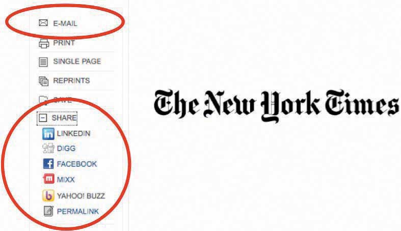
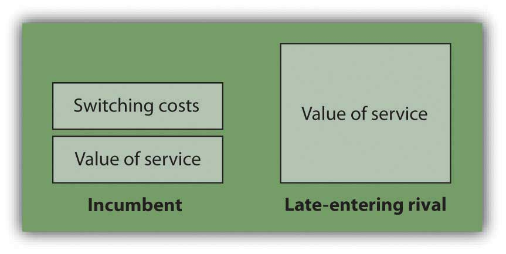
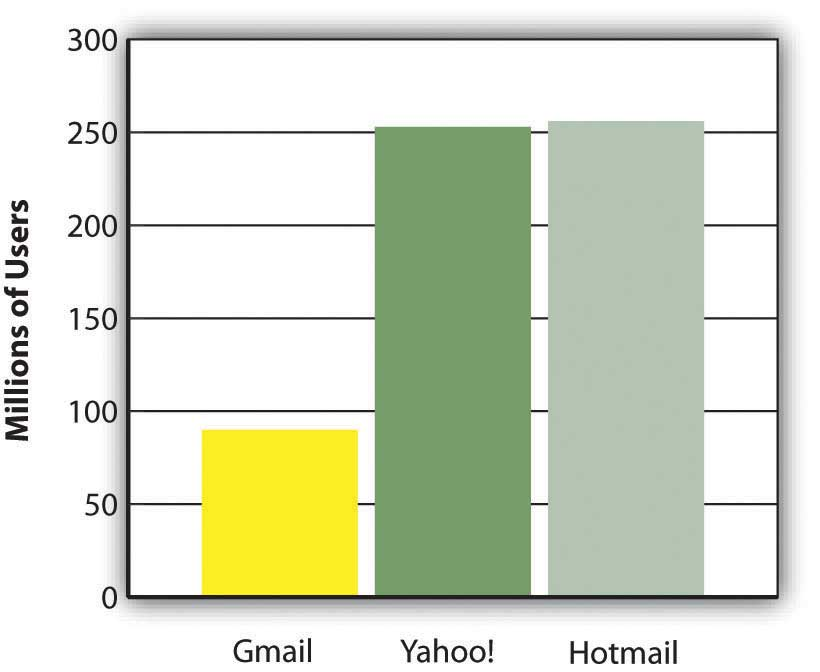
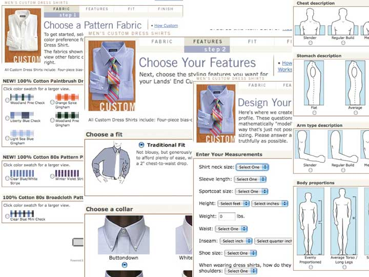

After studying this section you should be able to do the following:
Management has no magic bullets. There is no exhaustive list of key resources that firms can look to in order to build a sustainable business. And recognizing a resource doesn’t mean a firm will be able to acquire it or exploit it forever. But being aware of major sources of competitive advantage can help managers recognize an organization’s opportunities and vulnerabilities, and can help them brainstorm winning strategies.
While many of the resources below are considered in isolation, the strength of any advantage can be far more significant if firms are able to leverage several of these resources in a way that makes each stronger and makes the firm’s way of doing business more difficult for rivals to match. Firms that craft an imitation-resistant value chainA way of doing business that competitors struggle to replicate and that frequently involves technology in a key enabling role. have developed a way of doing business that others will struggle to replicate, and in nearly every successful effort of this kind, technology plays a key enabling role. The value chain is the set of interrelated activities that bring products or services to market (see Section 2.5 "Key Framework: The Value Chain" below). When we compare FreshDirect’s value chain to traditional rivals, there are differences across every element. But most importantly, the elements in FreshDirect’s value chain work together to create and reinforce competitive advantages that others cannot easily copy. Incumbents would be straddled between two business models, unable to reap the full advantages of either. And late-moving pure-play rivals will struggle, as FreshDirect’s lead time allows the firm to develop brand, scale, data, and other advantages that newcomers lack (see below for more on these resources).
Michael Dell enjoyed an extended run that took him from assembling PCs in his dorm room as an undergraduate at the University of Texas at Austin to heading the largest PC firm on the planet. For years Dell’s superefficient, vertically integrated manufacturing and direct-to-consumer model combined to help the firm earn seven times more profit on its own systems when compared with comparably configured rival PCs.Bill Breen, “Living in Dell Time,” Fast Company, December 19, 2007, http://www.fastcompany.com/magazine/88/dell.html. And since Dell PCs were usually cheaper, too, the firm could often start a price war and still have better overall margins than rivals.
It was a brilliant model that for years proved resistant to imitation. While Dell sold direct to consumers, rivals had to share a cut of sales with the less efficient retail chains responsible for the majority of their sales. Dell’s rivals struggled in moving toward direct sales because any retailer sensing its suppliers were competing with it through a direct-sales effort could easily chose another supplier that sold a nearly identical product. It wasn’t that HP, IBM, Sony, and so many others didn’t see the advantage of Dell’s model—these firms were wedded to models that made it difficult for them to imitate their rival.
But then Dell’s killer model, one that had become a staple case study in business schools, began to lose steam. Nearly two decades of observing Dell had allowed the contract manufacturers serving Dell’s rivals to improve manufacturing efficiency.T. Friscia, K. O’Marah, D. Hofman, and J. Souza, “The AMR Research Supply Chain Top 25 for 2009,” AMR Research, May 28, 2009, http://www.amrresearch.com/Content/View.aspx?compURI=tcm:7-43469. Component suppliers located near contract manufacturers, and assembly times fell dramatically. And as the cost of computing fell, the price advantage Dell enjoyed over rivals also shrank in absolute terms. That meant savings from buying a Dell weren’t as big as they once were. On top of that, the direct-to-consumer model also suffered when sales of notebook PCs outpaced the more commoditized desktop market. Notebook customers often want to compare products in person—lift them, type on keyboards, and view screens—before making a purchase decision.
Dell’s struggles as computers, customers, and the product mix changed, all underscore the importance of continually assessing a firm’s strategic position among changing market conditions. There is no guarantee that today’s winning strategy will dominate forever.
A firm’s brandThe symbolic embodiment of all the information connected with a product or service. is the symbolic embodiment of all the information connected with a product or service, and a strong brand can also be an exceptionally powerful resource for competitive advantage. Consumers use brands to lower search costs, so having a strong brand is particularly vital for firms hoping to be the first online stop for consumers. Want to buy a book online? Auction a product? Search for information? Which firm would you visit first? Almost certainly Amazon, eBay, or Google. But how do you build a strong brand? It’s not just about advertising and promotion. First and foremost, customer experience counts. A strong brand proxies quality and inspires trust, so if consumers can’t rely on a firm to deliver as promised, they’ll go elsewhere. As an upside, tech can play a critical role in rapidly and cost-effectively strengthening a brand. If a firm performs well, consumers can often be enlisted to promote a product or service (so-called viral marketingLeveraging consumers to promote a product or service.). Consider that while scores of dot-coms burned through money on Super Bowl ads and other costly promotional efforts, Google, Hotmail, Skype, eBay, MySpace, Facebook, Twitter, YouTube, and so many other dominant online properties built multimillion member followings before committing any significant spending to advertising.
Figure 2.2
The “E-mail” and “Share” links at the New York Times enlist customers to spread the word about products and services, user to user, like a virus.
Early customer accolades for a novel service often mean that positive press (a kind of free advertising) will also likely follow.
But show up late and you may end up paying much more to counter an incumbent’s place in the consumer psyche. In recent years, Amazon has spent no money on television advertising, while rivals Buy.com and Overstock spent millions. MSN’s budget for promoting its search product was twenty-two times greater than Google’s, and Microsoft is spending another one hundred million dollars marketing Bing.A. Klaassen, “Microsoft Aims Big Guns at Google, Asks Consumers to Rethink Search,” Advertising Age, May 25, 2009. Also, if done well, even complex tech products can establish themselves as killer brands. Consider that Intel has taken an ingredient product that most people don’t understand, the microprocessor, and built a quality-conveying name recognized by computer users worldwide.
Many firms gain advantages as they grow in size. Advantages related to a firm’s size are referred to as scale advantagesAdvantages related to size.. Businesses benefit from economies of scaleWhen costs can be spread across increasing units of production or in serving multiple customers. Businesses that have favorable economies of scale (like many Internet firms) are sometimes referred to as being highly scalable. when the cost of an investment can be spread across increasing units of production or in serving a growing customer base. Firms that benefit from scale economies as they grow are sometimes referred to as being scalable. Many Internet and tech-leveraging businesses are highly scalable since, as firms grow to serve more customers with their existing infrastructure investment, profit margins improve dramatically.
Consider that in just one year, the Internet firm BlueNile sold as many diamond rings with just 115 employees and one Web site as a traditional jewelry retailer would sell through 116 stores.Timothy Mullaney, “Jewelry Heist,” BusinessWeek, May 10, 2004. And with lower operating costs, BlueNile can sell at prices that brick-and-mortar stores can’t match, thereby attracting more customers and further fueling its scale advantages. Profit margins improve as the cost to run the firm’s single Web site and operate its one warehouse is spread across increasing jewelry sales.
A growing firm may also gain bargaining power with its suppliers or buyers. As Dell grew large, the firm forced suppliers wanting in on Dell’s growing business to make concessions such as locating close to Dell plants. Similarly, for years eBay could raise auction fees because of the firm’s market dominance. Auction sellers who left eBay lost pricing power since fewer bidders on smaller, rival services meant lower prices.
The scale of technology investment required to run a business can also act as a barrier to entry, discouraging new, smaller competitors. Intel’s size allows the firm to pioneer cutting-edge manufacturing techniques and invest seven billion dollars on next-generation plants.J. Flatley, “Intel Invests $7 Billion in Stateside 32nm Manufacturing,” Engadget, February 10, 2009. And although Google was started by two Stanford students with borrowed computer equipment running in a dorm room, the firm today runs on an estimated 1.4 million servers.R. Katz, “Tech Titans Building Boom,” IEEE Spectrum 46, no. 2 (February 1, 2009): 40–43, http://www.scribd.com/doc/21615808/IEEE-Spectrum-Magazine-Feb-2009. The investments being made by Intel and Google would be cost-prohibitive for almost any newcomer to justify.
Switching costsThe cost a consumer incurs when moving from one product to another. It can involve actual money spent (e.g., buying a new product) as well as investments in time, any data loss, and so forth. exist when consumers incur an expense to move from one product or service to another. Tech firms often benefit from strong switching costs that cement customers to their firms. Users invest their time learning a product, entering data into a system, creating files, and buying supporting programs or manuals. These investments may make them reluctant to switch to a rival’s effort.
Similarly, firms that seem dominant but that don’t have high switching costs can be rapidly trumped by strong rivals. Netscape once controlled more than 80 percent of the market share in Web browsers, but when Microsoft began bundling Internet Explorer with the Windows operating system and (through an alliance) with America Online, Netscape’s market share plummeted. Customers migrated with a mouse click as part of an upgrade or installation. Learning a new browser was a breeze, and with the Web’s open standards, most customers noticed no difference when visiting their favorite Web sites with their new browser.
It is critical for challengers to realize that in order to win customers away from a rival, a new entrant must not only demonstrate to consumers that an offering provides more value than the incumbent, they have to ensure that their value added exceeds the incumbent’s value plus any perceived customer switching costs (see Figure 2.3). If it’s going to cost you and be inconvenient, there’s no way you’re going to leave unless the benefits are overwhelming.
Figure 2.3
In order to win customers from an established incumbent, a late-entering rival must offer a product or service that not only exceeds the value offered by the incumbent but also exceeds the incumbent’s value and any customer switching costs.
Figure 2.4 E-mail Market Share in Millions of UsersJ. Graham, “E-mail Carriers Deliver Gifts of Nifty Features to Lure, Keep Users,” USA Today, April 16, 2008.
Data can be a particularly strong switching cost for firms leveraging technology. A customer who enters her profile into Facebook, movie preferences into Netflix, or grocery list into FreshDirect may be unwilling to try rivals—even if these firms are cheaper—if moving to the new firm means she’ll lose information feeds, recommendations and time savings provided by the firms that already know her well. Fueled by scale over time, firms that have more customers and have been in business longer can gather more data, and many can use this data to improve their value chain by offering more accurate demand forecasting or product recommendations.
Switching e-mail services can be a real a pain. You’ve got to convince your contacts to update their address books, hope that any message-forwarding from your old service to your new one remains active and works properly, regularly check the old service to be sure nothing is caught in junk folder purgatory. Not fun. So when Google entered the market for free e-mail, challenging established rivals Yahoo! and Microsoft Hotmail, it knew it needed to offer an overwhelming advantage to lure away customers who had used these other services for years. Google’s offering? A mailbox with vastly more storage than its competitors. With 250 to 500 times the capacity of rivals, Gmail users were liberated from the infamous “mailbox full” error, and could send photos, songs, slideshows, and other rich media files as attachments.
A neat innovation, but one based on technology that incumbents could easily copy. Once Yahoo! and Microsoft saw that customers valued the increased capacity, they quickly increased their own mailbox size, holding on to customers who might otherwise have fled to Google. Four years after Gmail was introduced, the service still had less than half the users of each of its two biggest rivals.
Commodities are products or services that are nearly identically offered from multiple vendors. Consumers buying commodities are highly price-focused since they have so many similar choices. In order to break the commodity trap, many firms leverage technology to differentiate their goods and services. Dell gained attention from customers not only because of its low prices, but also because it was one of the first PC vendors to build computers based on customer choice. Want a bigger hard drive? Don’t need the fast graphics card? Dell will oblige.
Technology has allowed Lands’ End to take this concept to clothing. Now forty percent of the firm’s chino and jeans orders are for custom products, and consumers pay a price markup of one-third or more for the tailored duds.Julie Schlosser, “Cashing In on the New World of Me,” Fortune, December 1, 2004. This kind of tech-led differentiation creates and reinforces other assets. While rivals also offer custom products, Lands’ End has established a switching cost with its customers, since moving to rivals would require twenty minutes to reenter measurements and preferences versus two minutes to reorder from LandsEnd.com. The firm’s reorder rates are 40 to 60 percent on custom clothes, and Lands’ End also gains valuable information on more accurate sizing—critical because current clothes sizes provided across the U.S. apparel industry comfortably fit only about one-third of the population.
Figure 2.5
Custom clothing from LandsEnd.com differentiates the firm and creates switching costs.
Data is not only a switching cost, it also plays a critical role in differentiation. Each time a visitor returns to Amazon, the firm uses browsing records, purchase patterns, and product ratings to present a custom home page featuring products that the firm hopes the visitor will like. Customers value the experience they receive at Amazon so much that the firm received the highest score ever recorded on the University of Michigan’s American Customer Satisfaction Index (ACSI). The score was not just the highest performance of any online firm, it was the highest ranking that any service firm in any industry had ever received.
Capital One has also used data to differentiate its offerings. The firm mines data and runs experiments to create risk models on potential customers. Because of this, the credit card firm aggressively pursued a set of customers that other lenders considered too risky based on simplistic credit scoring. Technology determined that these underserved customers not properly identified by conventional techniques were actually good bets. Finding profitable new markets that others ignored allowed Capital One to grow its EPS (earnings per share) 20 percent a year for seven years, a feat matched by less than 1 percent of public firms.T. Davenport and J. Harris, Competing on Analytics: The New Science of Winning (Boston: Harvard Business School Press, 2007).
AOL’s instant messaging client, AIM, has the majority of instant messaging users in the United States. Microsoft Windows has a 90 percent market share in operating systems. eBay has an 80 percent share of online auctions. Why are these firms so dominant? Largely due to the concept of network effectsAlso known as Metcalfe’s Law, or network externalities. When the value of a product or service increases as its number of users expands. (see Chapter 5 "Understanding Network Effects"). Network effects (sometimes called network externalities or Metcalfe’s Law) exist when a product or service becomes more valuable as more people use it. If you’re the first person with an AIM account, then AIM isn’t very valuable. But with each additional user, there’s one more person to chat with. A firm with a big network of users might also see value added by third parties. Sony’s PlayStation 2 dominated the prior generation of video game consoles in large part because it had more games than its rivals, and most of these games were provided by firms other than Sony. Third-party add-on products, books, magazines, or even skilled labor are all attracted to networks of the largest number of users, making dominant products more valuable.
Switching costs also play a role in determining the strength of network effects. Tech user investments often go far beyond simply the cost of acquiring a technology. Users spend time learning a product; they buy add-ons, create files, and enter preferences. Because no one wants to be stranded with an abandoned product and lose this additional investment, users may choose a technically inferior product simply because the product has a larger user base and is perceived as having a greater chance of being offered in the future. The virtuous cycle of network effectsA virtuous adoption cycle occurs when network effects exist that make a product or service more attractive (increases benefits, reduces costs) as the adopter base grows. doesn’t apply to all tech products, and it is strongest when a firm controls a standard (think AIM with their closed system versus Netscape, which used open standards), but in some cases where network effects are significant, they can create winners so dominant that firms with these advantages enjoy a near-monopoly hold on a market.
If no one sees your product, then it won’t even get considered by consumers. So distribution channelsThe path through which products or services get to customers.—the path through which products or services get to customers—can be critical to a firm’s success. Again, technology opens up opportunities for new ways to reach customers.
Users can be recruited to create new distribution channels for your products and services (usually for a cut of the take). You may have visited Web sites that promote books sold on Amazon.com. Web site operators do this because Amazon gives them a percentage of all purchases that come in through these links. Amazon now has over one million of these “associates” (the term the firm uses for its affiliatesThird parties that promote a product or service, typically in exchange for a cut of any sales. or third parties who promote a product or service, typically in exchange for a cut of any sales), yet it only pays them if a promotion gains a sale. Google similarly receives some 30 percent of its ad revenue not from search ads, but from advertisements distributed within third-party sites ranging from lowly blogs to the New York Times.Google Fourth Quarter 2008 Earnings Summary, http://investor.google.com/earnings.html.
In recent years, Google and Microsoft have engaged in bidding wars, trying to lock up distribution deals that would bundle software tools, advertising, or search capabilities with key partner offerings. Deals with partners such as Dell, MySpace, and Verizon Wireless have been valued at up to one billion dollars each.N. Wingfield, “Microsoft Wins Key Search Deals,” Wall Street Journal, January 8, 2009.
The ability to distribute products by bundling them with existing offerings is a key Microsoft advantage. But beware—sometimes these distribution channels can provide firms with such an edge that international regulators have stepped in to try to provide a more level playing field. Microsoft was forced by European regulators to unbundle the Windows Media Player, for fear that it provided the firm with too great an advantage when competing with the likes of RealPlayer and Apple’s QuickTime (see Chapter 5 "Understanding Network Effects").
Intellectual property protection can be granted in the form of a patent for those innovations deemed to be useful, novel, and nonobvious. In the United States, technology and (more controversially) even business models can be patented, typically for periods of twenty years from the date of patent application. Firms that receive patents have some degree of protection from copycats that try to identically mimic their products and methods.
But even if an innovation is patentable, that doesn’t mean that a firm has bulletproof protection. Some patents have been nullified by the courts upon later review (usually because of a successful challenge to the uniqueness of the innovation). Software patents are also widely granted, but notoriously difficult to defend. In many cases, coders at competing firms can write substitute algorithms that aren’t the same, but accomplish similar tasks. For example, although Google’s PageRank search algorithms are fast and efficient, Microsoft, Yahoo! and others now offer their own noninfringing search that presents results with an accuracy that many would consider on par with PageRank. Patents do protect tech-enabled operations innovations at firms like Netflix and Harrah’s (casino hotels), and design innovations like the iPod click wheel. But in a study of the factors that were critical in enabling firms to profit from their innovations, Carnegie Mellon professor Wes Cohen found that patents were only the fifth most important factor. Secrecy, lead time, sales skills, and manufacturing all ranked higher.Timothy Mullaney and Spencer Ante, “InfoWars,” BusinessWeek, June 5, 2000.